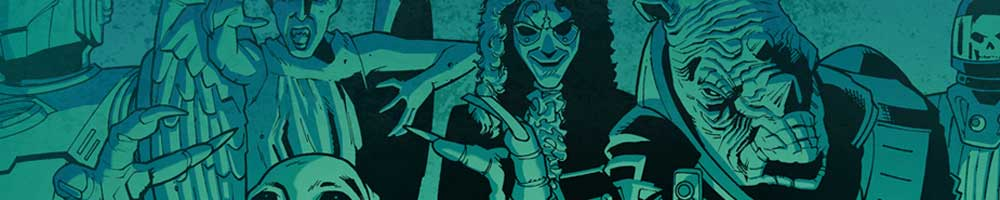
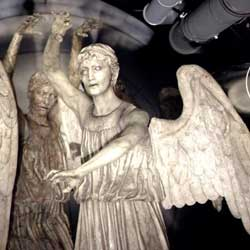

|  |
| Home The Doctors The Companions The Villians Show History |
|
|
The Weeping AngelsThe Weeping Angels are a race of predatory creatures from the long-running sci-fi series Doctor Who, resembling stone statues. They were introduced in the 2007 episode "Blink", making repeat appearances in "The Time of Angels"/"Flesh and Stone" (2010) and "The Angels Take Manhattan" (2012) as well as cameo appearances in "The God Complex" (2011) and "The Time of the Doctor" (2013). Since their initial appearance, they have been persistently nominated as one of the most popular and frightening Doctor Who monsters. Steven Moffat, their creator, attributes their appeal to childhood games such as Grandmother's Footsteps and the notion that every statue might secretly be a disguised Weeping Angel.[1] |
Christine O'Brien Ann Marie Skjold |
Content derived from the Doctor Who Wikipedia |